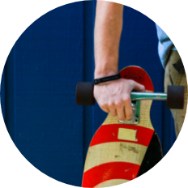

동호회/클럽
Our Team, Our Dream
인싸 인증!
롱보드 타봤니?
가을바람을 가르며
질주하다
롱보드 타봤니?
가을바람을 가르며
질주하다
롱보드 동호회
'롱보드코리아'
'롱보드코리아'

본 콘텐츠는 대한체육회에서 발행하는 월간지  에서 발췌 되었습니다.
에서 발췌 되었습니다.
에서 발췌 되었습니다.
묵내 유일의 롱보드전문커뮤니티 '통보드코리아는 2010년 11월 카페를 개설 후 현재 7만7천 명이 넘는 회원을 보유하고 있다. 출범 후 11년의 세월을 보내며 국내 유일의 롱보드전문커뮤니티로 자리잡았다. 현재 전국적으로 약 50여 개의 롱보드 지역모임 및 크루가 활동하고 있다.
말 그대로 긴 롱~ 보드
롱보드(LongBoard)는 1950년대 조반 캘리포니아에서 유래됐다고도 하고 하와이에서 유래됐다고도 한다. 스노우보드, 스케이트보드, 서핑의 특징과 장점을 모두 담고 있다 보니 유래지도 바다와 밀접해있다. 파도가 없음 때도 서핑 하는 느낌을 받고 싶은 서퍼들이 서핑보드 밑에 바퀴를 장착한 것이 최초의 몽보드가 됐다고 한다.
롱보드는 스케이트보드의 일종인, 말 그대로 긴 보드를 의미한다. 롱보드는 35inch로 일반 보드보다 길고 면적도 넓기 때문에 초보자가 타기에도 안정감이 있고, 보드 위에서 스템이나 댄싱을 구사하기도 쉽다. 롱보드의 인기에는 여러 이유가 있다. 에너지 소모가 많아 다이어트 효과가 뛰어나고, 바람을 온몸으로 느끼며 기술을 하나씩 습득할 때마다 느끼는 성취감과 쾌감도 크다. 무엇보다도 여행하면서 라이딩을 즐길 수 있어서 즐거움과 영상 촬영 등의 재미가 쏟하다. 이렇듯 매력이 다양하다 보니 롱보드코리아의 동호인 수가 나날이 늘고 있다.
롱보드코리아를 운영하고 있는 신재식 씨는 "불과 몇 년 전까지만 해도 신기하게 쳐다보는 분이 많았어요. 유튜브와 SNS가 활성화되면서 하나의 독자적인 문화로 성장하고 생활체육으로 자리잡게 됐습니다. 이제는 신기해하기 보다는 반가워하시는 것 같아요."라고 전했다. 롱보드를 타는 기술은 크게 세 가지로 나뉜다. 보드를 차고 돌리는 기술인 트릭(trick), 내리막에서 속도를 내면서 내려오는 기술인 다운힐(downhill)이 그것이다. "인싸로 등극한 여자 롱보더들의 살랑살랑 춤 추는 듯한 스텝 동작들을 많이 보셨을 텐데요. 이게 바로 '댄싱 기술이구나'라고 알아보실 수 있을 거예요. 그리고 세 가지 기술에 따라 롱보드 모양이 다르기 때문에 기술에 맞게 롱보드 선택도 신중해야 하고요."
롱보드는 스케이트보드의 일종인, 말 그대로 긴 보드를 의미한다. 롱보드는 35inch로 일반 보드보다 길고 면적도 넓기 때문에 초보자가 타기에도 안정감이 있고, 보드 위에서 스템이나 댄싱을 구사하기도 쉽다. 롱보드의 인기에는 여러 이유가 있다. 에너지 소모가 많아 다이어트 효과가 뛰어나고, 바람을 온몸으로 느끼며 기술을 하나씩 습득할 때마다 느끼는 성취감과 쾌감도 크다. 무엇보다도 여행하면서 라이딩을 즐길 수 있어서 즐거움과 영상 촬영 등의 재미가 쏟하다. 이렇듯 매력이 다양하다 보니 롱보드코리아의 동호인 수가 나날이 늘고 있다.
롱보드코리아를 운영하고 있는 신재식 씨는 "불과 몇 년 전까지만 해도 신기하게 쳐다보는 분이 많았어요. 유튜브와 SNS가 활성화되면서 하나의 독자적인 문화로 성장하고 생활체육으로 자리잡게 됐습니다. 이제는 신기해하기 보다는 반가워하시는 것 같아요."라고 전했다. 롱보드를 타는 기술은 크게 세 가지로 나뉜다. 보드를 차고 돌리는 기술인 트릭(trick), 내리막에서 속도를 내면서 내려오는 기술인 다운힐(downhill)이 그것이다. "인싸로 등극한 여자 롱보더들의 살랑살랑 춤 추는 듯한 스텝 동작들을 많이 보셨을 텐데요. 이게 바로 '댄싱 기술이구나'라고 알아보실 수 있을 거예요. 그리고 세 가지 기술에 따라 롱보드 모양이 다르기 때문에 기술에 맞게 롱보드 선택도 신중해야 하고요."
시작은 미약했으나 이제는 전국 규모로
해외에서는 2000년대부터 본격적으로 롱보드를 만들고 타면서 점차 확산됐다. 국내에 봉보드가 소개되고 확산된 것은 2010년 경 롱보드가 본격적으로 유입되면서 부터다. 이후 유튜브를 통해 영상이 공유되며 저변이 확대됐다. 신재식 씨 또한 영상을 통해 봉보드를 전하며 시작했고 현재의 몽보드코리아 운영까지 하게 됐다고 한다.
롱보드를 즐기는 몇 명이 모여서 즐긴 것이 롱보드코리아의 시작이다. 점차 전국적으로 확산되며 참여 인원이 늘었고, 각 지역모임을 만들게 되면서 전국적인 규모의 동호회로 자리잡았다. 이후 2011년 말부터 크고 작은 롱보드 행사를 주최하며 본격적으로 저변을 확대해 나갔다. 2014년에는 롱보드를 더욱 적극적으로 알리고자 도심 중심가에서 롱보드내회를 개최했다. “지역 담당공무원을 섬득해 서울 신촌의 차 없는 거리에서 '롱보드대축제를 개최했습니다. 거리를 기니는 많은 사람에게 볼거리를 제공하는 것은 물론, 지역상권도 살리는 긍정적 효과도 나타났어요. 현재까지 6회째 대회를 개최하며 신촌 차 없는 거리에서 매년 열리는 행사로 자리 매김 했습니다.” 이외에도 가을에는 '롱보드코리아페스티발" 대회를 개최하며 전국의 동호인들의 실력을 공유한다. 이 외에도 매년 봄, 가을에 각종 대회를 개최하는데, 세계 여러 나라의 롱보더들도 대거 참여하는 국제적인 행사로 발돋움하고 있다. 롱보드대회 개최를 통해 롱보드 문화 저변이 확대되고, 롱보더들의 참여와 실력도 향상됨을 확인했다. 신재식 운영자는 "동호회원들이 국제대회서 우승하며 대한민국 롱보를 알리는 모습을 봤을 때 정말 뿌듯함을 느낍니다. 책임감을 넘어 사명감으로 대한민국 롱보드 발전을 위해 더욱 노력하고자 합니다."라며 앞으로의 포부도 밝혔다.
롱보드를 즐기는 몇 명이 모여서 즐긴 것이 롱보드코리아의 시작이다. 점차 전국적으로 확산되며 참여 인원이 늘었고, 각 지역모임을 만들게 되면서 전국적인 규모의 동호회로 자리잡았다. 이후 2011년 말부터 크고 작은 롱보드 행사를 주최하며 본격적으로 저변을 확대해 나갔다. 2014년에는 롱보드를 더욱 적극적으로 알리고자 도심 중심가에서 롱보드내회를 개최했다. “지역 담당공무원을 섬득해 서울 신촌의 차 없는 거리에서 '롱보드대축제를 개최했습니다. 거리를 기니는 많은 사람에게 볼거리를 제공하는 것은 물론, 지역상권도 살리는 긍정적 효과도 나타났어요. 현재까지 6회째 대회를 개최하며 신촌 차 없는 거리에서 매년 열리는 행사로 자리 매김 했습니다.” 이외에도 가을에는 '롱보드코리아페스티발" 대회를 개최하며 전국의 동호인들의 실력을 공유한다. 이 외에도 매년 봄, 가을에 각종 대회를 개최하는데, 세계 여러 나라의 롱보더들도 대거 참여하는 국제적인 행사로 발돋움하고 있다. 롱보드대회 개최를 통해 롱보드 문화 저변이 확대되고, 롱보더들의 참여와 실력도 향상됨을 확인했다. 신재식 운영자는 "동호회원들이 국제대회서 우승하며 대한민국 롱보를 알리는 모습을 봤을 때 정말 뿌듯함을 느낍니다. 책임감을 넘어 사명감으로 대한민국 롱보드 발전을 위해 더욱 노력하고자 합니다."라며 앞으로의 포부도 밝혔다.

온 가족이 즐길 수 있는 레저문화로
롱보드코리아는 다른 여타 종목의 동호회와 마찬가지로 코로나19로 인해 활농에 많은 제약을 받았다. 전국의 지역모임을 다니며 롱보드관련 후원사들과 함께 몽보드름 알리는 행사와 모임도 중단했다. 현재 코로나19 확산 방지를 위한 정부의 방역수칙을 철저히 준수하며 앞으로를 준비 중이다.
롱보드가 국내에 들어온 지 10여 년, 지속해서 롱보드 인프라가 형성되고 있기에 누구나 즐겁고 안전하게 즐기는 레저스포츠로 정착할 수 있는 기반을 마련했다. 남녀노소, 가족이 함께 즐길 수 있게 2018년부터 뜻음 같이하는 이들과 함께 무료로 시작한 '롱보드코리아배움프로젝트'가 그것. 이후 현재까지 '롱보드코리아스쿨'을 통해 '롱코주니어반과 성인반' 프로그램을 운영하며 가족이 함께 배우고 즐길 수 있는 장치를 마련했다. 코로나19 상황이지만 인원 수 제한 등 방역수칙을 철저히 지키며 진행하고 있다.
롱보드가 국내에 들어온 지 10여 년, 지속해서 롱보드 인프라가 형성되고 있기에 누구나 즐겁고 안전하게 즐기는 레저스포츠로 정착할 수 있는 기반을 마련했다. 남녀노소, 가족이 함께 즐길 수 있게 2018년부터 뜻음 같이하는 이들과 함께 무료로 시작한 '롱보드코리아배움프로젝트'가 그것. 이후 현재까지 '롱보드코리아스쿨'을 통해 '롱코주니어반과 성인반' 프로그램을 운영하며 가족이 함께 배우고 즐길 수 있는 장치를 마련했다. 코로나19 상황이지만 인원 수 제한 등 방역수칙을 철저히 지키며 진행하고 있다.
롱보드를 타면 다른 모습의 내가 보여요
롱보드코리아 운영자 신재식
롱보드는 혼자 또는 여러 명, 온가족이 함께 즐길 수 있는 레저스포츠입니다. 동작 하나하나를 익히는 도전을 통해 성취감과 자신감을 얻는 것은 물론, 지금까지와는 다른 자신을 볼 수 있을 거예요. 롱보드코리아 카페에 오면 롱보드를 좀더 쉽고 재미있게 즐길 수 있도록 많은 정보를 제공해요. 모임도 할 수 있으니 부담 없이 문을 두드리세요!
롱보드는 혼자 또는 여러 명, 온가족이 함께 즐길 수 있는 레저스포츠입니다. 동작 하나하나를 익히는 도전을 통해 성취감과 자신감을 얻는 것은 물론, 지금까지와는 다른 자신을 볼 수 있을 거예요. 롱보드코리아 카페에 오면 롱보드를 좀더 쉽고 재미있게 즐길 수 있도록 많은 정보를 제공해요. 모임도 할 수 있으니 부담 없이 문을 두드리세요!
롱보드코리아 안내
네이버카페 : 롱보드코리아
회원수 : 77.800명
인스타그램 : LongboardKorea MD문의
롱보드행사
매년 봄 > 신촌 차 없는 거리 '롱보드대축제(2014년부터 6회째)
매년가을 > '롱보드코리아페스티발'(2011년부터 10회짜)
수시로 카페 행사, 인스타그램 행사, 후원사 협업 행사!
코로나19로 인해 2020~2021년은 미개최
회원수 : 77.800명
인스타그램 : LongboardKorea MD문의
롱보드행사
매년 봄 > 신촌 차 없는 거리 '롱보드대축제(2014년부터 6회째)
매년가을 > '롱보드코리아페스티발'(2011년부터 10회짜)
수시로 카페 행사, 인스타그램 행사, 후원사 협업 행사!
코로나19로 인해 2020~2021년은 미개최